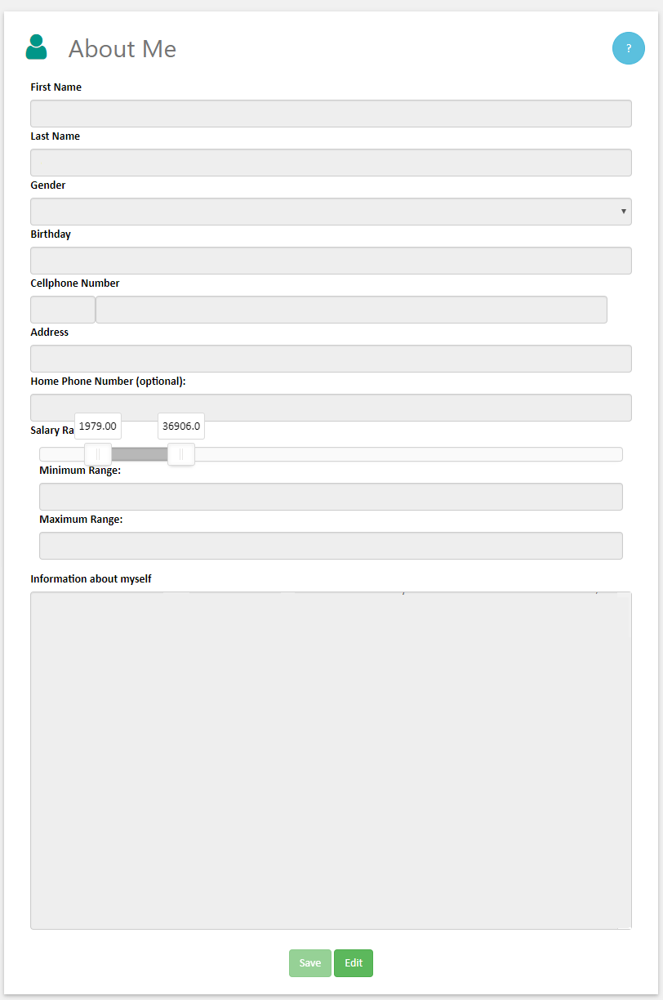
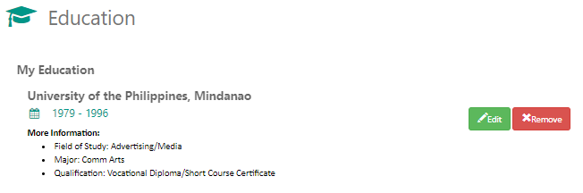
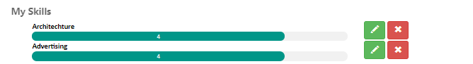
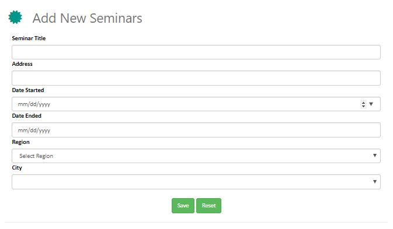
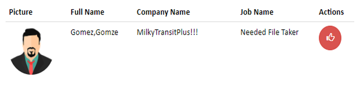
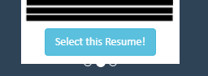
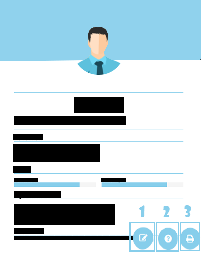

- Applicant Experience
- About Me
- Education
- Skills
- Seminars
- Pending Request
- Chat Box
- Profile Image
- Resume Builder
- Navigation Bar
Applicant Experience
-
Basic Information
Job Experience is important, especially for companies that wants only the most experienced and trained professionals, so for applicants, it is very important save and record their past jobs. Here at Fresh Start, we make it easier for users to create a record of past experiences. Fill up some forms and your done.
-
What does each field do?
Listed below are the items in the Applicant Experience field:

- Position Title - This is the official name of the position of an applicant at the company he/she used to work at.
- Company Name - is the given name of the company of where the applicant worked at.
- Year Started/ Year Ended - This is the date of when an applicant was employed and retired. There are no restrictions to the field. The only requirement is that the Year Started is lesser than the Year Ended.
- Specialization(s) - This refers to skill sets required for the job at the company. This helps employers understand what type of skills/abilities the applicant has developed throughout his job.
- Position Level - What is the level of the applicant in the company hierarchy when he left.
- More info on your experience - Users are required to input any information in regards to their position. For example: What did you do during your job? What experiences did you gain during your job? etc... Remember, to make it short, as you only have a limit of 3500 words.

About Me
-
What is this field about?

Account Information pertains to the information that were personal information filled up during sign-up. The information may include basic things such as name, address, phone number and etc... Users can save and edit their information, according to their convience.
Education
-
Basic Information
Education is a requirement. Almost everyone in their lives had finished at least high school, however most companies these days look for college graduates. Regardless of those things, here at Fresh Start every bit of education is important, whether it'd be something as small elementary or high school, users can place almost any type of education that they wish.
-
What does each field do?
1. Institute/University/School Name - The official name of the school/institute/university that the applicant has graduated from.
2. Qualification - Stages of education that ranges from Elementary to Doctorate(Short Vocational Education is also included). When the user selects either Elementary or High School, the Field of Study and Major fields are disregarded, because at these stages students cannot have a specialization.
3. Field of Study - Refers to the broad field of your education. For example, accounting students belong to the Business field, but it is not described what type of business study that they undertake.
4. Major - Answers the earlier question on which branch on a field of study does a student take. Filipinos usually call it as 'course', but that in itself is a misconception. Major is the academic program students take, while course refers to the subject a college student takes.
5. Year Started/Year Ended - The year when a student has started and finished his studies.
A saved education should look like this:

Skills
-
Basic Information
Skills are important factors in determining, whether an applicant is accepted for a job or not. Certain companies look for certain skill sets, and those skillsets will most certainly determine, whether you, the applicant could be useful for their company. Here at Fresh Start, placing skills is as simple as it could be. All you need to do is to place the skill name and your proficiency at said skill. However, please take note that these skills must be accurate and correct, as skills are very important for both company and applicants alike. 
Seminars
-
Basic Information
 In its most pared down sense, a seminar is a meeting in which people can learn about a topic. Seminars typically take place over the course of a few days and involve cooperative discussion, multiple speakers and opportunities to share perspectives and issues related to the topic. Attending a seminar has numerous benefits, including improving communication skills, gaining expert knowledge, networking with others and renewing motivation and confidence.
(Source:http://education.seattlepi.com/benefits-attending-seminars-1929.html)
The paragraph above states the importance of seminars, especially for professionals. That is why, we at Fresh Start believe that attended seminars should be shared, not only as a way to increase numbers, but think of it as a way to see how much the applicant has learned and if the applicant is determined to improve his or her self. Enough about that, lets move on to the system.
The system allows the applicant to save seminars in the simplest way possible. Fill up the fields, press save, and voila the data is available for everyone to see. The fields to fill up are as follows: Seminar Title, Address, Date Started, Date Ended, Region, City. The fields themselves are self-explanatory and could be found at the certificate given at the end of the seminar, so filling up the fields would be very easy.
Pending Request
-
What is the pending request tab?
This tab shows the list of job requests made by applicants and requests made by employers to applicants. User data is listed on table, which could be narrowed down by using the textbox which is above the table.
1. "Request List" - This is a list of requesting companies. These companies will send a request if they are interested in your profile. Like with companies with job requests, applicants could also like/dislike a request. If Like is pressed, the users are matched and can now engage in chat.

Employer Applicant Request
2. "Jobs I've Requested" - This is a list of job requests made by applicants. To like a job, please refer to the 'Job Finder' page.
Chat Room
-
Information about the chat box
When two users are matched, they can engage in a chat. Chat allows both employers and applicant to talk about negotiations and interview. This two-way conversation allows users to communicate anytime and anywhere, without the use of SMS.
1. Users can open the chatbox, by clicking the 'Chat Room' on the navigation bar. For more information about the navigation bar, click here.
2. Once the chatbox is open, the user can choose a user to engage in chat. Click on a user's name to go to the message board.
Also, applicants can unmatch with a user, by clicking the "Unmatch with User" button.
3. The picture above is the "Message Board". Messages from both users are displayed in the message board. To send a message, the user has to type in a textbox and then press "Send" on the message board or you could press "Enter" on the keyboard. Once the message is sent, it is displayed on message board (Please refer to ChatBox Item 2). The messages on the message board are colored on the positioned according to the sender and the recepient.
The message has two color which are blue and green. A green message means that it is the message of the other party, while the blue message is the message that you have sent.
Please give the chat a try. Of course because it is a chat, the exchange of messages is done in real time; so when you send a message, the other user sees it immediately through notification.
Profile Image
-
How to change profile image?

1. Click on the image on the sidebar to change your profile image.
2. If you have followed number 1, a modal should appear on the screen. To open an image click "Upload Image", and once clicked, the square on the center of the modal will change according to the image uploaded.
3. Once an image is uploaded, click "Save Image" to save your image. (Note: If you are unsatisfied with the size of your image, toggle the slider to zoom your image and drag the image to your desired position.)
Resume Builder
-
Basic Information
Every aspiring professional should know the importance of having a good resume. First impressions count, and the first impression that a company will have of you, is dependent on your resume. That is why applicants must present an honest and clear resume.
Fresh Start makes it easier for applicants to build a clear and concise resume through the use of our resume builder. Not only is it easier to build a resume, but the design is absolutely splendid and useful for even mobile devices.
Enough promoting let's get on with how to use the resume builder.
-
How does this work?
1. Firstly, on the bottom of the applicant profile screen, the user should be able to see a button (Please look at the image "Resume Builder Button" for reference). Click the said button to proceed.
2. Once step one is completed, the resume builder modal should appear on the screen. There are three resumes available in our resume builder. (Please refer to "Resumes of Resume Builder" for more details.)

3. Select one of those three resumes using by clicking the 'Select this Resume' button. If the button is clicked, the user will be prompted to save to save the resume as default, however, the minimum requirement of the resume builder is to have at least one skill and education. However, if those requirements are not fulfilled, the user is prompted with an error

4. After choosing your resume, a new page will open which contains your resume, alongside the other data that was input in the system such as Skills, Education, Personal Information, Seminars, and About Yourself.
Three buttons are presented at the bottom of the resume builder screen. Each are numbered accordingly.- 1. Customization - Users can optimize fonts and change fore color of their resumes.
- 2. Help - This will take the user to the Resume Builder Help.
- 3. Print - Users will be able to save/ and or print using their browsers.